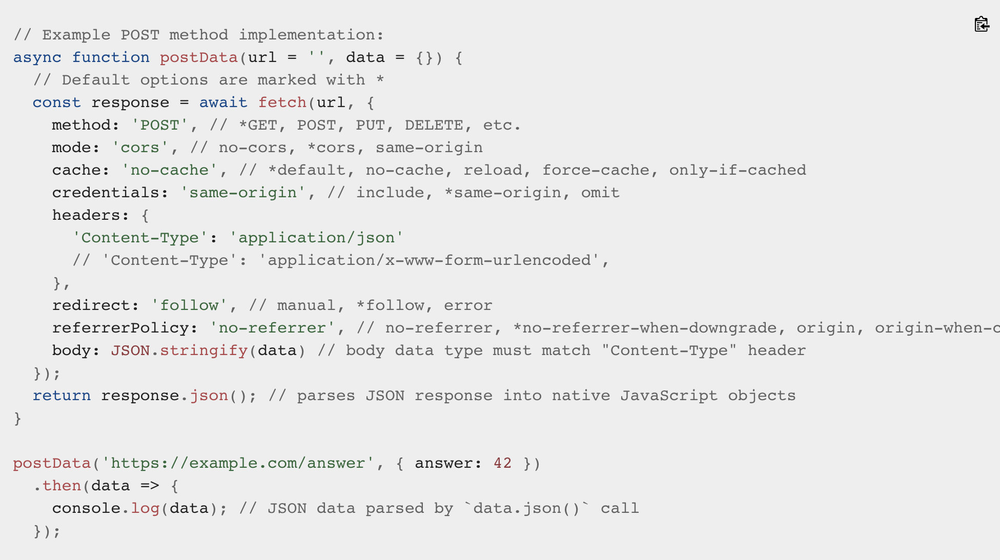

When you enter data, the browser and/or the web server will check to see that the data is in the correct format and within the constraints set by the application.
- Client-side
- Server-side
Built-in form validation uses HTML5 form validation features. Better performance.
Ex: required, minlength and maxlength, min and max, type, pattern.
When is valid or invalid use CSS pseudo-class (:valid, :invalid).
JavaScript (customizable) uses a set of methods and properties available on these DOM interfaces:
- HTMLButtonElement (represents a button element)
- HTMLFieldSetElement (represents a fieldset element)
- HTMLInputElement (represents an input element)
- HTMLOutputElement (represents an output element)
- HTMLSelectElement (represents a select element)p>
- HTMLTextAreaElement (represents a textarea element);
- Repeatedly invoke a function: Window.setInterval();
- Optimized animation: Window.requestAnimationFrame();
Properties to use with the above elements:
- validationMessage, validity, willValidate.
Methods to use:
- checkValidity(), setCustomValidity(message).
The fetch() method can optionally accept a second parameter (first is URL), an init object that allows you to control a number of different settings.
